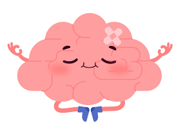
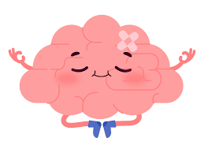

Sobre Nós
A InclusionTechnician é uma plataforma de apoio escolar para crianças com TDAH e Espectro Autismo, da educação infantil e fundamental 1. Nossa plataforma tem o objetivo de promover um ensino inclusivo, ofertando uma grande educação qualificada com jogos interativos para melhorar a concentração da criança, currículos de profissionais de apoio para melhor desempenho das crianças, e para disponibilizar auxílio para o responsável nessa situação de cuidados.


Nossa Metodologia
Nossa metodologia baseia-se em inovar o ensino digital com inclusão à crianças possuidoras de deficiências, disponibilizamos vídeo-aulas para um aprendizado qualificado, jogos interativos, apoio psicológico, além de um banco de currículos para profissionais de apoio.

Banco de Currículos
Nosso banco de currículos, é uma disponibilidade, na qual profissionais podem colocar seus currículos, buscando contratos com responsáveis de crianças com Tdah e Autismo, para poderem se especializar e ajudarem no que for fornecido. Além disso, os responsáveis podem entrar em contato com os profissionais, para trabalharem com seus filhos, tanto em casa, como na escila, e até mesmo ajudar na utilização de nossa plataforma. Venha conheça nossos profissionais qualificados que oferecem apoio educacional especializado. E venha voê profissional de apoio fazer parte da nossa equipe. Entre AQUI paar visitar nossa página de currículos
Jogos Interativos
Explore nossos jogos interativos que ajudam no aprendizado de forma divertida, interativa, e inclusiva. Fornecemos esses jogos, para uma melhor concentração e calmaria as crianças, para que o estudo possa ser qualificado e divertido. Faça já seu CADASTRO para ter todo o acesso gratuito a nossa plataforma.
Caso já seja cadastrado, faça seu LOGIN e aproveite nossa plataforma educacional.
Apoio Profissional
Oferecemos suporte contínuo de profissionais capacitados para auxiliar no desenvolvimento educacional de seu filho, o banco de currículos é justa mente para isso! Qualificação de ponta, e profissionais responáveis para esse trabalho. Aqui também oferecemos apoio para o respnsável com auxílio de como lidar com a situação de seu filho no momento, como ter uma boa educação, e ajuda em momentos como esse.
 
